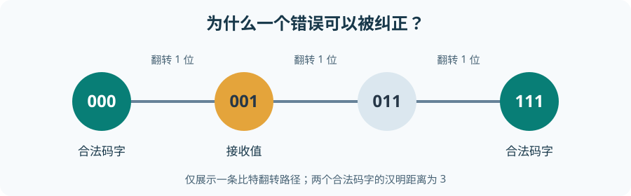

从零理解前向纠错：从校验位到 BCH、LDPC¶
一条通信链路即使正确发出了 0 和 1，接收端也可能因为噪声、干扰或同步误差读错。本章要回答一个根本问题：接收端不知道原始数据，凭什么发现并改正错误？ 答案不是“让每一位绝对可靠”，而是只允许发送满足某些约束的比特序列。接收序列若违反约束，就暴露了错误；若允许的序列彼此足够远，还能推断最可能发送的是哪一个。
这就是前向纠错（Forward Error Correction，FEC）。“前向”指发送端预先加入可供接收端使用的冗余，不必为每个错误要求重传；它不表示 FEC 永远能纠正所有错误。本文使用小型二进制分组码逐步建立概念，最后再对应到 DVB-S2 的 BCH 外码和 LDPC 内码。小型例子的矩阵不是 DVB-S2 标准使用的矩阵。
1. 整条数据流：先认清输入和输出¶
信息位 u（原本想传的数据）
│ 编码器按照约束添加冗余
▼
码字 c（信息位 + 校验位，或者它们的其他排列）
│ 经过可能出错的信道
▼
接收序列 r / 接收软信息
│ 解码器利用约束发现、定位或推断错误
▼
估计码字 ĉ → 估计信息位 û
信息位（information bits）是编码前需要保护的比特；校验位（parity bits）是按规则计算出来的冗余比特；码字（codeword）是编码器允许发送的完整序列。接收序列未必是合法码字。码（code）则是所有合法码字组成的集合。解码器可以报告成功、检测到错误但无法纠正，或者在超出能力时误纠正；不要把“输出了一个合法码字”自动等同于“恢复了真实信息”。
例如规定 0 → 000、1 → 111。允许的码字仅有 000、111，不允许任意三位组合。若收到 101，接收端知道它不合法，并且更容易推断为 111。这组合法状态比原始一位的两个状态在三维比特空间里隔得更开，代价是每传一位信息要用三次发送机会。这个重复码很浪费，却已体现 FEC 的全部动机。
2. 冗余、校验位与码率¶
2.1 一个校验位能做什么¶
先规定“偶校验”：一组比特中 1 的总数必须是偶数。原始信息 101 有两个 1，所以补校验位 0 得到码字 1010；原始信息 100 有一个 1，补 1 得到 1001。接收端再数一次 1：如果 1010 的第二位翻转，收到 1110，三个 1 违反偶校验，便知道发生了错误。
但仅凭这一个校验结果，不能确定四个位置中的哪一个出错。若同时翻转两位，1 的奇偶性又可能恢复，错误会漏检。因此“添加冗余”并不自动意味着“能纠错”；关键在于冗余产生了多少相互独立、可区分不同错误模式的约束。后面会用多个校验式定位错误。
2.2 长度、码率与代价¶
对于一个固定长度的分组码，约定每次输入 \(k\) 个信息位，输出 \(n\) 个码字位，写作 \((n,k)\) 码；此处 \(n>k\)。码率（code rate）是输入信息位数与输出码字位数之比：
它是无量纲比例，不是每秒的速率。重复三次码为 \((3,1)\)，码率 \(1/3\)；1010 所在的单偶校验例子每次输入 3 位、输出 4 位，码率 \(3/4\)。对系统码（systematic code），信息位原样占据固定位置，其余 \(n-k\) 位是校验位；非系统码也可以纠错，只是码字里未必直接看出原信息位。码率低通常意味着更多冗余和更高的传输成本，但纠错能力还取决于具体约束，不能只看 \(R\)。
如果固定每秒可传 \(T\) 个码字位，且不计帧头等其他开销，那么每秒最多送入编码器约 \(RT\) 个信息位。这解释了为什么 FEC 改善可靠性与吞吐效率之间需要权衡。
2.3 BER 和 FER 衡量的不是同一件事¶
先给概率一个可用的直觉：在大量同条件试验里，事件发生的比例可用来估计其发生概率。误比特率（Bit Error Rate，BER）是错误比特数除以比较的总比特数；误帧率（Frame Error Rate，FER）是至少有一处错误的帧数除以总帧数。必须说明是 FEC 前还是 FEC 后、比较哪层的比特或帧，否则两个 BER/FER 数字无法直接比较。
假设仅为了计算，解码后每位独立地以概率 \(p\) 出错，一帧含 \(L\) 位；每位正确的概率为 \(1-p\)，整帧全对的概率为 \((1-p)^L\)。因此这组假设下
例如 \(p=10^{-4}\)、\(L=1000\)，得到 \(1-0.9999^{1000}\approx0.0952\)，约 9.52% 的帧至少错一位。这个数字并不矛盾：很低的 BER 乘上很长的帧，仍会形成明显的 FER。实际 FEC 残余错误常成串或相关，不能不加验证地套独立模型。
本节要点：冗余是为了制造可检验的约束；码率计量冗余的成本；BER 数“错了多少位”，FER 数“有多少帧至少错了一位”。
3. 用汉明距离说明“为何可以纠错”¶
3.1 距离是两个序列不同的位置数¶
两个等长比特串的汉明距离（Hamming distance）就是逐位比较后不同的位置数，记 \(d_H(a,b)\)。例如 000 与 101 在第 1、3 位不同，距离为 2；000 与 111 距离为 3。一个序列中的 1 的个数叫汉明重量（Hamming weight），记 \(w(a)\)；它恰好等于该序列与全零序列的距离。
对一个码，把任意两个不同合法码字的距离都算出，最小者叫最小距离（minimum distance） \(d_{\min}\)。重复三次码仅有 000 与 111，所以 \(d_{\min}=3\)。如果一个发送码字翻转 1 位，到原码字的距离变成 1，到另一个码字至少还有 2；最近码字判决能把它拉回原处。如果翻转 2 位，接收结果反而可能更靠近错误的码字。

3.2 检错与纠错界限从哪里来¶
若最少要翻转 \(d_{\min}\) 位才能从一个合法码字变为另一个合法码字，那么翻转不超过 \(d_{\min}-1\) 位时，接收结果不可能是另一个合法码字，必然能检测到错误。注意这是“保证检出”的上界；更多错误有时也能检出，但不能保证。
要保证纠正至多 \(t\) 位错误，任意两个码字周围“相距不超过 \(t\)”的接收序列不能重叠。若两边各走 \(t\) 步，两个码字之间至少需要 \(2t+1\) 步，即 \(d_{\min}\ge 2t+1\)。所以可保证纠正的最大整数错误数为
\(\lfloor x\rfloor\) 表示向下取整。若 \(d_{\min}=3\)，可保证检测至多 2 位错误，却只保证纠正 1 位；若 \(d_{\min}=4\)，保证检出 3 位，但仍只保证纠正 1 位。检测与纠正不是同义词；若解码器试图“纠错”超出保证范围，可能把接收序列错误地拉到另一合法码字。
这些距离界限说的是最坏情况下的保证，不等于随机信道下的实际 BER 或 FER。概率性能还取决于错误出现的分布以及解码算法。
4. 在做矩阵前：GF(2)、异或与线性组合¶
4.1 为什么普通整数加法不合适¶
本章比特只能取 0、1。我们希望“翻转两次回到原值”，所以使用模 2 运算：整数相加后只保留除以 2 的余数。其加法等同异或（XOR，记 \(\oplus\)）：
| \(a\) | \(b\) | \(a\oplus b\) |
|---|---|---|
| 0 | 0 | 0 |
| 0 | 1 | 1 |
| 1 | 0 | 1 |
| 1 | 1 | 0 |
例如 \(1\oplus1=0\)、\(1\oplus0=1\)、\(1\oplus1\oplus1=1\)。模 2 乘法和普通 0/1 乘法相同：只有 \(1\cdot1=1\)。因为在这套运算中 \(1\oplus1=0\)，加法与减法效果相同。集合 \(\{0,1\}\) 连同这些加、乘法称为 GF(2)，也叫二元有限域。这里“域”只需理解为运算规则自洽、非零元素 1 可以做除法；我们暂时不需要抽象代数的其他知识。后面的每个矩阵求和都按 XOR 算，不会产生整数 2。
4.2 向量、矩阵与手算乘法¶
把一串比特按顺序排成向量，例如 \(u=(1,0,1)\)。把若干等长的行向量上下排成矩形表，就是矩阵。\(k\times n\) 矩阵有 \(k\) 行、\(n\) 列；\(uG\) 表示长为 \(k\) 的行向量乘 \(k\times n\) 矩阵，结果是长为 \(n\) 的行向量。计算结果的第 \(j\) 位：沿第 \(j\) 列，把 \(u\) 的每个分量与矩阵该列对应元素相乘，再全部 XOR。
例如
第一列给 \(1\cdot1\oplus0\cdot0=1\)；第二列给 \(1\cdot0\oplus0\cdot1=0\)；第三列给 \(1\cdot1\oplus0\cdot1=1\)，故 \(uG=(1,0,1)\)。从“行”的角度看，同一结果是“选择 \(u\) 中为 1 的那些 \(G\) 的行，然后逐位 XOR”；此例只选第一行。这样的选取和相加叫 GF(2) 上的线性组合。
若把码字作为行向量写为 \(c\)，想改成列向量则写 \(c^{\mathsf T}\)。上标 \(\mathsf T\) 表示转置：原来的一行竖起来成为一列；矩阵转置则交换行和列。后面校验式中的 \(Hc^{\mathsf T}\) 因而是“矩阵乘列向量”，其每一行同样按 GF(2) 做逐项乘与 XOR。
4.3 什么叫线性分组码¶
分组意味着编码器每次处理固定 \(k\) 位。线性意味着任意两个合法码字逐位 XOR 后仍是合法码字，且全零也是合法码字。若使用生成矩阵 \(G\) 编码为 \(c=uG\)，两个信息向量 \(u_1,u_2\) 满足
因为每一列的乘法与 XOR 可重新分组。右边是两个码字的 XOR，左边又是一个信息向量的编码结果，所以仍合法。这个性质稍后让最小距离的计算变简单：两个码字的距离，等于它们 XOR 后那个非零码字的重量。
5. 一个完整的 \((7,4)\) 编码与纠错例子¶
5.1 先用三个规则定义合法码字¶
设 4 位信息为 \(u=(u_1,u_2,u_3,u_4)\)。让码字前四位直接等于信息位，后三位为校验位：
规定校验位由下列 XOR 规则生成：
这是一个 \((7,4)\) 系统线性码，每 4 个信息位输出 7 位，码率 \(4/7\)。为什么设计三个交叠的规则？因为一个错误若落在不同位置，会破坏不同组合的规则，于是能留下不同的“错误指纹”。它是一个汉明码（Hamming code）的小实例，后面会明确看到各位置的指纹。
选信息 \(u=(1,0,1,1)\)。按三条规则逐项计算：
因此发送码字为 \(c=(1,0,1,1,1,0,0)\)，即 1011100。此时可以先不看矩阵，直接看到编码是如何由输入数据计算出冗余的。
5.2 生成矩阵 \(G\)：把编码规则压缩为一张表¶
四个信息位各自对七个输出位置的影响构成四行。记 \(I_4\) 为 4 行 4 列的单位矩阵：主对角线为 1，其余为 0；它保证前四个输出位就是输入本身。把校验规则右侧各信息位的系数排成 \(P\)，得到
\([I_4\;P]\) 表示左右并排放两个矩阵；\(G\) 的维度为 \(4\times7\)。编码式 \(c=uG\) 现在只是把上面的逐位 XOR 规则统一写出。为真正手算一次，\(u=(1,0,1,1)\) 会选中 \(G\) 的第 1、3、4 行：
第 1 行 1 0 0 0 1 1 0
第 3 行 0 0 1 0 1 0 1
第 4 行 0 0 0 1 1 1 1
逐列 XOR 1 0 1 1 1 0 0
这与直接求三个校验位的 1011100 一致。矩阵没有创造另一种编码；它只是把同一组关系写成便于分析和实现的形式。
5.3 校验矩阵 \(H\)：把合法性写成零约束¶
合法码字满足 \(p_1=u_1\oplus u_3\oplus u_4\)，等价于 \(u_1\oplus u_3\oplus u_4\oplus p_1=0\)；另两条同理。每一条等式都可作为矩阵的一行。令 \(I_3\) 为 3 行 3 列单位矩阵，\(P^{\mathsf T}\) 是上面 \(P\) 的转置，则
\(H\) 是 \(3\times7\) 的校验矩阵（parity-check matrix）。合法码字 \(c\) 必须满足 \(Hc^{\mathsf T}=(0,0,0)^{\mathsf T}\)。以 1011100 手算三行：
第 1 条：c1 XOR c3 XOR c4 XOR c5 = 1 XOR 1 XOR 1 XOR 1 = 0
第 2 条：c1 XOR c2 XOR c4 XOR c6 = 1 XOR 0 XOR 1 XOR 0 = 0
第 3 条：c2 XOR c3 XOR c4 XOR c7 = 0 XOR 1 XOR 1 XOR 0 = 0
为什么 \(G\) 与 \(H\) 恰好配套？一方面 \(G=[I_4\;P]\)，另一方面 \(H^{\mathsf T}\) 是把 \(P\) 放在 \(I_3\) 上面形成的 \(7\times3\) 矩阵。按块相乘，\(GH^{\mathsf T}=I_4P\oplus PI_3=P\oplus P=0\)。这里的 0 是全零的 \(4\times3\) 矩阵；\(I_4P=P\)、\(PI_3=P\) 是单位矩阵“不改变另一矩阵”的性质。于是任何 \(c=uG\) 都满足
对这个系统码反过来也成立：若某个 7 位序列通过全部三条检查，其后三位必等于前四位按规则计算出的校验位，故它是合法码字。这解释了 \(G\) 定义如何生成合法序列，\(H\) 定义如何识别合法序列；它们描述的是同一个码，不是两个相互竞争的编码器。
5.4 syndrome：把“哪个规则被破坏”变成指纹¶
接收序列为 \(r\) 时，计算伴随式/症状（syndrome） \(s=Hr^{\mathsf T}\)，它有 3 位。\(s=000\) 意味着所有校验约束通过；\(s\ne000\) 意味着接收序列不是合法码字。注意 000 不保证没有发生错误：若错误恰好把一个合法码字变成另一个，检查同样通过。
用 \(e\) 表示错误模式：出错位置为 1，其余为 0。若发送 \(c\)、收到 \(r=c\oplus e\)，则
因为合法 \(c\) 的校验结果为零。这是 syndrome 最关键的性质：它只反映错误模式，不依赖当时发送的具体信息位。单比特错误时，\(e\) 只有一位为 1，所以 \(He^{\mathsf T}\) 恰好等于 \(H\) 的对应那一列：
| 出错位置 | \(H\) 对应列，即 syndrome |
|---|---|
| 1 | 110 |
| 2 | 011 |
| 3 | 101 |
| 4 | 111 |
| 5 | 100 |
| 6 | 010 |
| 7 | 001 |
七列均非零且互不相同，所以任意单比特错误既能发现又能定位。假设 1011100 的第 6 位翻转，收到 1011110。按三条检查手算：
s1 = r1 XOR r3 XOR r4 XOR r5 = 1 XOR 1 XOR 1 XOR 1 = 0
s2 = r1 XOR r2 XOR r4 XOR r6 = 1 XOR 0 XOR 1 XOR 1 = 1
s3 = r2 XOR r3 XOR r4 XOR r7 = 0 XOR 1 XOR 1 XOR 0 = 0
syndrome = 010 = H 的第 6 列
于是翻转接收串第 6 位，恢复 1011100，取其前四位，得到原信息 1011。这是一条完整的“编码 → 传输出错 → 检查 → 定位 → 纠正 → 取回信息”路径。
5.5 为什么这个码的最小距离确实是 3¶
若存在重量为 1 的非零合法码字，它对应的单个 \(H\) 列必须为零；上表没有零列，所以不存在。若存在重量为 2 的非零合法码字，两列 XOR 必须为零，这要求两列相同；上表也没有相同列，所以不存在。另一方面，\(G\) 第 2 行 0100011 本身是重量为 3 的合法码字。因此最小非零码字重量为 3。
对线性码，两个合法码字 \(c_1,c_2\) 的差异位置就是 \(c_1\oplus c_2\) 的 1 所在位置；这个 XOR 仍是合法码字。故“最小非零码字重量”就是 \(d_{\min}\)，此码 \(d_{\min}=3\)，与“可保证纠 1 位、检 2 位”的几何结论一致。
3 位 syndrome 最多有 \(2^3=8\) 种取值；正好容纳“无错”1 种和“七个不同位置各错 1 位”7 种。这也说明为何仅有一个偶校验位不够定位 7 个可能错误位置。一般地，若希望纠正长为 \(n\) 的码字中至多一个错误，至少需要能区分 \(n+1\) 种情形，故必要条件是 \(2^{n-k}\ge n+1\)；这是计数上的必要条件，不是任意满足它的码都自动拥有单错纠正能力。
本节要点：信息位用 \(G\) 变成码字；\(H\) 检查码字约束；syndrome 是被破坏的校验组合；最小距离解释哪些错误数能被保证处理。
6. 硬解码、软解码与“最可能”的含义¶
6.1 硬判决只保留 0/1¶
上面的 syndrome 例子假定接收端已有确定的 0/1 序列。硬判决（hard decision）首先把每个有噪声的信号样本判成一位，再按汉明距离或 syndrome 纠错。若所有位独立、每位以相同概率 \(p<1/2\) 翻转，那么某候选码字 \(c\) 与接收串 \(r\) 相差 \(d\) 位时，它产生该接收串的概率为 \(p^d(1-p)^{n-d}\)：\(d\) 位出错各贡献一个 \(p\)，其余 \(n-d\) 位正确各贡献一个 \(1-p\)。在这种假设及等先验码字下，\(d\) 越小，候选越可能，所以“选最近码字”不仅是几何直觉，也是最大似然判决。
若各位错误概率不同、错误相关或码字先验不同，最近汉明距离未必是最优。对本例而言，两位错误时 syndrome 是两列 XOR，可能恰好等于第三列，单错解码器便会误翻第三位，造成三位差错；所以不能把“算出了 syndrome”误认为“始终能纠正”。
6.2 软信息保留可靠程度¶
实际 Demapper 可以对每个编码位输出软值，而不是立即丢弃幅度信息。在写公式之前，先约定 \(P(b=0\mid y)\) 的意思是“已经观察到接收值 \(y\) 后，该位 \(b\) 为 0 的概率”；\(P(b=1\mid y)\) 同理。这叫条件概率，两个候选比特值的概率之和为 1。把前者除以后者得到赔率：若两者分别为 0.9 和 0.1，赔率就是 9，表示 0 获得 9 倍于 1 的支持。
对数 \(\ln x\) 是“以常数 \(e\approx2.718\) 为底，多少次幂等于 \(x\)”的反运算。例如 \(\ln 1=0\)；\(\ln 9>0\)，\(\ln(1/9)<0\)。它保留正数的大小顺序，还把相乘变为相加：\(\ln(ab)=\ln a+\ln b\)。因此常用的对数似然比（Log-Likelihood Ratio，LLR）可在本文“正数支持 0”的约定下写为
这个 \(L\) 是无量纲的对数赔率，不是概率；正负号给倾向，绝对值越大表示两种候选的相对支持越悬殊。虽然术语叫“似然比”，上式写的是后验比；若要用“给定某比特值时观察到 \(y\) 的似然”代替后验，须考虑比特先验概率，不能无条件交换。另有系统采用相反的 LLR 符号约定。
一个直观的三次重复码例子：三个硬判决为 1 0 0，多数投票会选 000。但若第一位的软证据强烈支持 1，而后两位仅微弱支持 0，软解码可能选 111。用三位在给定发送位后条件独立、等先验的简化模型和上述 LLR 约定，假设三个观测对应的 LLR 分别为 \(-5,+0.2,+0.2\)。条件独立让“在某候选码字下同时看到三个观测”的似然等于各观测似然相乘；等先验让两个候选码字的先验在比值中约掉。再取对数，乘积比变成三个对数比相加，因此“发送全 0”相对“发送全 1”的总证据为 \(-5+0.2+0.2=-4.6\)，更支持 111。若先做硬判决，-5 与 -0.01 都只剩一个 1，关键可靠程度就丢了。
LDPC 解码通常以每个码字位的软信息为输入，并在多个校验约束之间迭代传递信息；BCH 解码也可使用基于代数结构的纠错步骤。硬/软是接收信息与算法的选择，不是两种不同的码率定义。软解码往往更强，但需要更多计算、存储和数值精度。
6.3 Coding gain 应怎样比较¶
编码增益（coding gain）通常是在相同目标 BER 或 FER、相同业务比特口径和可比信道条件下，使用编码所需的信噪比比未编码时降低多少。常用横轴 \(E_b/N_0\)：\(E_b\) 是每个信息位对应的能量，\(N_0\) 是噪声谱密度参数；若用“每个发送码字位的能量”替代 \(E_b\) 而不计码率，会得出不公平比较。
信噪比常写为 dB（分贝），即把两个同类功率/能量比 \(x\) 写成 \(10\log_{10}x\)；\(\log_{10}x\) 的意思是“10 的多少次幂等于 \(x\)”，例如 \(\log_{10}100=2\)。例如在一个仅用于说明比较方法的假设曲线上，未编码方案达到同一 BER 需要 6 dB，而编码方案需要 4 dB，则编码增益为 2 dB。这个数不是某个特定 DVB-S2 模式的保证值；真实增益依赖码、解码器、块长、调制、信道及目标误差率。编码增加冗余，所以还应同时报告频谱效率、延迟、复杂度和 FER，而不只报告一个“增益”。
7. 从小矩阵走向 BCH、LDPC 与 DVB-S2¶
7.1 两种码沿用的共同骨架¶
本章手算的 \((7,4)\) 码说明了“合法码字是满足约束的序列”。BCH（Bose–Chaudhuri–Hocquenghem）码是一类具有代数构造的循环码；它利用多项式以及扩展有限域上的运算来设计校验关系与有保证的错误纠正能力。这里的 GF(2) 只提供二进制加减乘的起点；理解 BCH 细节还需要学习 GF(\(2^m\)) 中不止 0、1 的元素以及多项式求值，不能把本章的三位 syndrome 直接当成 BCH 的完整解码方法。
低密度奇偶校验（Low-Density Parity-Check，LDPC）码也用校验矩阵 \(H\) 描述合法码字，但 \(H\) 很大且稀疏：大多数矩阵元素为 0，只有少数为 1。可把每个校验行想成一个节点、每个码字位想成另一个节点，某处矩阵元素为 1 就连接两个节点；这张图叫 Tanner 图。解码器反复让位节点的软证据与校验节点的约束相互影响。这里只建立结构直觉；具体的和积、最小和算法需要另行推导概率消息与更新规则。
两者都可以说“\(Hc^{\mathsf T}=0\)”是一种合法性检查，但BCH 的代数构造/译码与 LDPC 的稀疏迭代译码不是同一算法。syndrome=0 仅说明输出满足检查，不能证明输出就是发送端原来的码字。
7.2 在 DVB-S2 的位置与数量级¶
在 DVB-S2 发送链中，BBFRAME 先经系统 BCH 外码，再经系统 LDPC 内码，形成 FECFRAME；接收链先进行 LDPC 解码，再进行 BCH 解码。BCH 的校验位追加到 BBFRAME 后，LDPC 的校验位再追加到 BCH 输出后。ETSI EN 302 307-1 第 5.3 节给出帧结构与各 MODCOD 的参数。
以该标准的正常帧、LDPC 3/5为例：BBFRAME 为 \(K_{\rm bch}=38688\) 位；BCH 输出 \(N_{\rm bch}=K_{\rm ldpc}=38880\) 位；LDPC 输出 \(N_{\rm ldpc}=64800\) 位。因此 BCH 增加 \(38880-38688=192\) 位，LDPC 增加 \(64800-38880=25920\) 位。标称的 3/5 是 \(38880/64800\) 这个内码率，而从 BBFRAME 到 FECFRAME 的比值是 \(38688/64800\approx0.5970\)；若再计入 BBHEADER、物理层头、导频等开销，业务净效率还会变化。
发送：BBFRAME(38688) → BCH(+192) → LDPC(+25920) → FECFRAME(64800)
接收：软信息 → LDPC 解码 → BCH 解码 → BBFRAME
真实 DVB-S2 码字长度远超本章 7 位玩具码，且还要处理交织、星座映射和物理层成帧。但问题没有变：用冗余约束让接收机区分原本难以区分的候选信息序列。学 BCH 时继续追问约束怎样由有限域与多项式构造；学 LDPC 时继续追问稀疏 \(H\) 怎样让软信息在图上迭代传播。
8. 常见误区与总复盘¶
| 容易误解的说法 | 更准确的理解 |
|---|---|
| “冗余位越多，任何错误都能纠正。” | 冗余是资源，实际保证取决于码字间最小距离和解码规则。 |
| “校验位就是把信息位复制一次。” | 重复码只是最简单例子；一般校验位是多个信息位的组合。 |
| “syndrome 非零等于知道哪一位错了。” | 一般只表明约束被破坏；只有在可纠错错误集合中，各错误模式的 syndrome 可区分时才能定位。 |
| “syndrome 为零说明传输完全无错。” | 也可能错误恰好把一个合法码字变成另一个。 |
| “能检出两位错就能纠正两位错。” | 最小距离为 3 的码能保证检出两位，但只保证纠正一位。 |
| “\(G\) 与 \(H\) 是两个不同的码。” | 它们分别描述同一个线性码的生成方式与合法性约束。 |
| “码率就是业务吞吐率。” | 码率只计当前编码层输入/输出比，未涵盖帧头、导频和填充等开销。 |
| “BER 很低就意味着 FER 必然很低。” | 长帧和错误相关性都会改变 FER；必须明确测量层与帧长。 |
| “硬判决与软判决只差一个实现细节。” | 硬判决丢弃可靠程度；软解码可利用这些信息改善推断。 |
| “加入 FEC 一定免费获得增益。” | 更好可靠性要付出带宽/能量口径、复杂度、存储和延迟等代价。 |
把全文压成一张关系图：
k 个信息位 u
├─ 码率 k/n：这 n 位里有多少比例是输入信息
└─ 生成矩阵 G：u → 合法码字 c
├─ 校验矩阵 H：Hcᵀ = 0
├─ 最小汉明距离 dmin：合法码字隔多远
└─ 经信道变成 r：syndrome Hrᵀ 指出约束破坏情况
├─ 硬解码：按 0/1 序列与距离/错误模式推断
└─ 软解码：连同每位可靠程度推断
最核心的因果链是：加入冗余 → 允许发送的码字变少且受约束 → 噪声造成的非法序列可被发现 → 码字之间的距离足够大时可唯一找回原码字。矩阵把约束写成可计算的形式；syndrome 把校验失败模式写成接收端可用的线索。这就是继续学习 BCH 和 LDPC 时共同的底座。
权威原始资料¶
- MIT OpenCourseWare，18.200 Lecture 21–22: Linear Error-Correcting Codes：线性码、最小距离、\((7,4)\) 汉明码、生成矩阵与校验矩阵。
- MIT OpenCourseWare，6.02 Lecture 5: Error Correction, Syndrome Decoding：校验约束、矩阵形式与 syndrome 译码的教学材料。
- ETSI EN 302 307-1 V1.4.1，第 5.3 节 FEC encoding：DVB-S2 BCH/LDPC 级联、帧结构与实际参数。